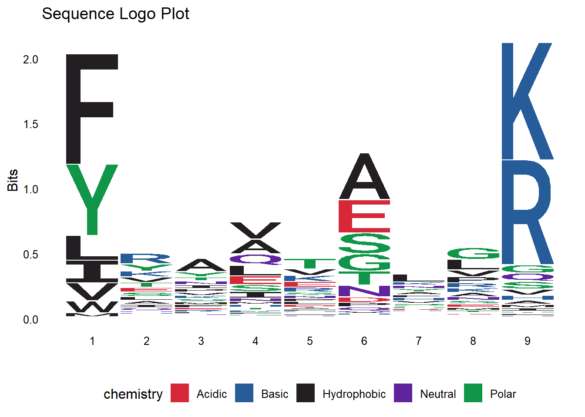

library("tidyverse")
library("Biostrings")
library("ggseqlogo")Bachelors Project
Investigating Cross-Reactivity Between Autoimmunogenic Epitopes and Pathogen Proteomes
Summary
The project aims to investigate cross-reactivity between known autoimmunogenic epitopes, sourced from the IEDB database, and proteomes of pathogenic bacteria and viruses. To manage the complexity, I will cluster bacterial and viral proteomes using MMseqs2, selecting representative proteins from each group for analysis.
I will then, from biological knowledge, weigh the different amino acids positions. The usual culprit in cross reactivity is the MHCII which usually present 15mers. We know the usual hydrophobic clefts position in MHCII and the positions that are in contact with the TCR. From this we can weigh importance of specific positions. We will make a model that predicts the cross reactivity for a given protein, and we will test it on know autoimmunogenic proteins from pathogens.
Method
Using IEDB i will find the epitopes that are found to be associated with all autoimmune diseases in humans.
The following filters where applied: “Epitope Structure”, “Include Positive Assays”, “MHC Restriction Type: Class II”, “Host: Homo Sapiens (Human)”, “Disease Data: Autoimmune Disease”, “No T cell assays” and “No B cell assays”.
These filters will ensure that I get only Linear MHC class II epitopes, that is found only with MHC assays, meaning that i will be able to find to MHC allele that was used. This will allow me to find the binding core, using netpanMHCII. and then find the anchor positions on the peptides. With the found anchor positions we can now weigh the conservation of this position more, allowing for more accurate cross-reactivity check.
This Returned ~5588 epitopes for analyzation.
libraries
Data import
# Exported table from IEDB, Epitope page
autoimmune_antigens <- read_csv("./Data/autoimmune_antigens.csv")
# Exported table from IEDB, Assay page
autoimmune_MHC_restriction <- read_csv("./Data/autoimmune_MHC_restriction.csv")
# From class will be replaced with bigger bacteria proteome dataset
fasta <- readAAStringSet("./Data/IEDB_infectius_peptides.fsa",)
# Clustered bacteria proteome dataset using mmseq2
clusters <- read_tsv("./Data/infectius_cluster.tsv", col_names = c("cluster_ID", "member_ID"))
# From NetMHCIIpan containing information about binding core
DRB5_0101_NetMHCIIpan <- read_csv("./Data/DRB5_0101_NetMHCIIpan.csv", skip = 1, col_names = TRUE)Wrangling IEDB tables for netMHCIIpan
# Making the epitope dataset tidy
autoimmune_antigens <- autoimmune_antigens |>
dplyr::rename("peptides" = "Epitope - Name",
"protein_source" = "Epitope - Source Molecule",
"organism_source" = "Epitope - Source Organism",
"ID" = "Epitope ID - IEDB IRI") |>
mutate(peptides = str_trim(str_replace(peptides, "\\+.*", "")),
ID = str_trim(str_extract(ID, "\\d+$"))) |>
filter(str_detect(peptides, "^[ACDEFGHIKLMNPQRSTVWY]+$")) |>
dplyr::select(ID, peptides, protein_source, organism_source)
# Making the Assay dataset tidy
autoimmune_MHC_restriction <- autoimmune_MHC_restriction |>
dplyr::rename("ID" = `Epitope - Epitope IRI`,
"MHCII_Allele" = `MHC Restriction - Name`) |>
mutate(ID = str_trim(str_extract(ID, "\\d+$"))) |>
filter(!is.na(ID)) |>
select(ID, MHCII_Allele)
# Merging to get information about peptide and MHC allele in one table
merged_peptides <- left_join(autoimmune_antigens, autoimmune_MHC_restriction, by = "ID") |>
filter(!is.na(MHCII_Allele) & str_length(peptides) > 15)
# Summary information to use for NetMHCIIpan (MHC allele)
merged_peptides |>
group_by(MHCII_Allele) |>
summarise(n())# A tibble: 8 × 2
MHCII_Allele `n()`
<chr> <int>
1 HLA class II 1397
2 HLA-DR 465
3 HLA-DRB1 101
4 HLA-DRB1*01:01 7
5 HLA-DRB1*03:01 8
6 HLA-DRB1*04:01 16
7 HLA-DRB1*15:01 389
8 HLA-DRB5*01:01 929# Write fasta file for netMHCIIpan for the chosen allele of interest
merged_peptides |>
filter(MHCII_Allele == "HLA-DRB5*01:01") |>
write_fasta("ID", "peptides", "DRB5_0101.fasta")We found here that about ~1000 peptides was found using the DRB5_0101 as the restriction allele, we can therefore assume that the anchors matches that of this allele and run it through NetMHCIIpan.
NetMHCIIpan output wrangling and decision of anchorpoints:
based on www.syfpeithi.de we found that typical anchorpoints for DRB5_0101 are
P1: F, Y, L, M
P4: Q, V, I, M
P9: R, K
We can therefore decide to check cross-reactivity based on this or look at our peptides that was binder found through NetMHCIIpan by a logoplot.
# Tidying data
wrangled_DRB5_0101 <- DRB5_0101_NetMHCIIpan |>
filter(Rank < 5) |>
distinct(ID, .keep_all = TRUE) |>
select(ID, Core)
# Make logo plot of the DRB5_0101 cores
ggseqlogo(wrangled_DRB5_0101$Core, method = "bits") +
ggtitle("Sequence Logo Plot")
We find that anchor P1 (F and L) and P9(K and R) fits nicely with what was reported in syfpeithi, therefore we will use these for filtering.
Cluster wrangeling using mmseqs2:
using mmseqs and the IEDB_infectius_peptides.fsa, we cluster based on sequence similarity using a minimum sequence identity of 70% and a 80% alignment coverage
mmseqs createdb unique_IEDB_infectius_peptides.fsa infectius_peptides_DB
mmseqs cluster infectius_peptides_DB infectius_cluster tmp
mmseqs createtsv infectius_peptides_DB infectius_peptides_DB infectius_cluster infectius_cluster.tsvThe discovery from this .fsa file was, that the sequences that had the same accession name was clustered together (which makes sense). Therefore we will simply take the original fasta, group them and pick 1 representative. This will reduce the amount of peptides we need to compare to our known autoimmune epitopes, allowing for faster computing.
Tidying pathogen proteome data
# Making the pathogen proteome fastafile to a dataframe
distinct_sequences <- data.frame(
header = names(fasta),
sequence = as.character(fasta)
) |>
distinct(header, .keep_all = TRUE)
# Filtering pathogen proteome based on the found anchors
distinct_sequences_DRB5_0101 <- distinct_sequences |>
filter(str_detect(sequence, "[FL].{7}[KR]"))Checking for cross-reactivity:
# Running similarity check with 3 acceptable errors on our now filtered proteome data
peptide_counts <- autoimmune_antigens |>
mutate(matches = map(peptides, ~{
matched_indices <- which(vcountPattern(pattern = .x,
subject = distinct_sequences_DRB5_0101$sequence,
max.mismatch = 3,
with.indels = TRUE) > 0)
list(Pathogen_ID = distinct_sequences_DRB5_0101$header[matched_indices],
count = length(matched_indices))
})) |>
unnest_wider(matches) # Splitting the list into 'headers' and 'count' columns
peptide_counts |>
arrange(desc(count))# A tibble: 5,588 × 6
ID peptides protein_source organism_source Pathogen_ID count
<chr> <chr> <chr> <chr> <list> <int>
1 434691 RTLLIK Vimentin Homo sapiens <chr [19]> 19
2 434690 RGILTLK Actin, cytoplasmic 1 Homo sapiens <chr [4]> 4
3 592182 FLIFPSA Chain A, Complex Between… Homo sapiens <chr [2]> 2
4 1393024 KLPLLLAL Bone marrow proteoglycan Homo sapiens <chr [2]> 2
5 162146 ELLIRKLPF Histone HIST2H3PS2 Homo sapiens <chr [1]> 1
6 222306 FEFPEFQL 40S ribosomal protein S7 Homo sapiens <chr [1]> 1
7 451515 SLGSALRP Vimentin Homo sapiens <chr [1]> 1
8 489000 YRPGTVALR Histone HIST2H3PS2 Homo sapiens <chr [1]> 1
9 1017052 GVLSDLTK Tetraspanin-14 Homo sapiens <chr [1]> 1
10 1031181 LQDAEIAR Protein S100-A6 Homo sapiens <chr [1]> 1
# ℹ 5,578 more rowspeptide_counts |>
group_by(organism_source) |>
summarise(Matches_per_protein = sum(count))# A tibble: 1 × 2
organism_source Matches_per_protein
<chr> <int>
1 Homo sapiens 36Conclusion
The result tells us the 36 peptides from the filtered proteome dataset, showed potential cross-reactivity. For further analysis one could include more MHC alleles and include information about TCR contact points. Also the similarity check needs to be backed up by evidence and perhaps be changed.